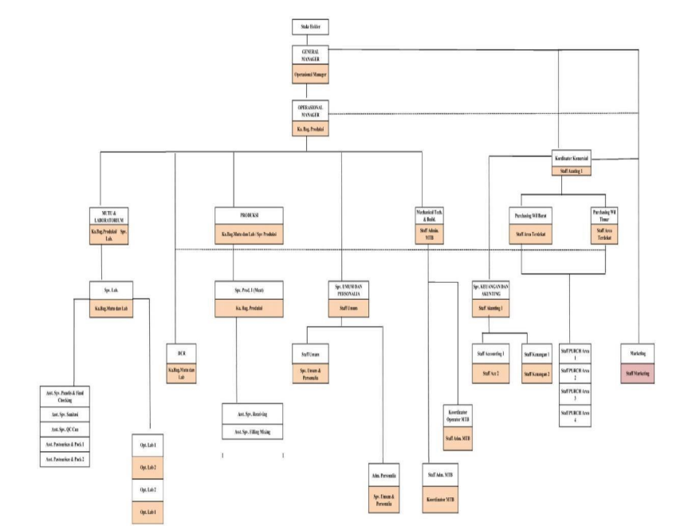

Struktur Organisasi
Mengenal susunan kepemimpinan dan tim kami
Keberhasilan PT Grahamakmur Ciptapratama tidak terlepas dari kerja sama tim yang solid dan kepemimpinan yang berkomitmen. Setiap bagian dalam organisasi kami memiliki peran penting dalam menjaga mutu produk, keamanan pangan, serta kelancaran proses produksi hingga distribusi.
Berikut ini adalah bagan struktur organisasi kami yang menggambarkan hubungan antara jajaran pimpinan dan setiap divisi yang bekerja bersama untuk mewujudkan visi perusahaan.
